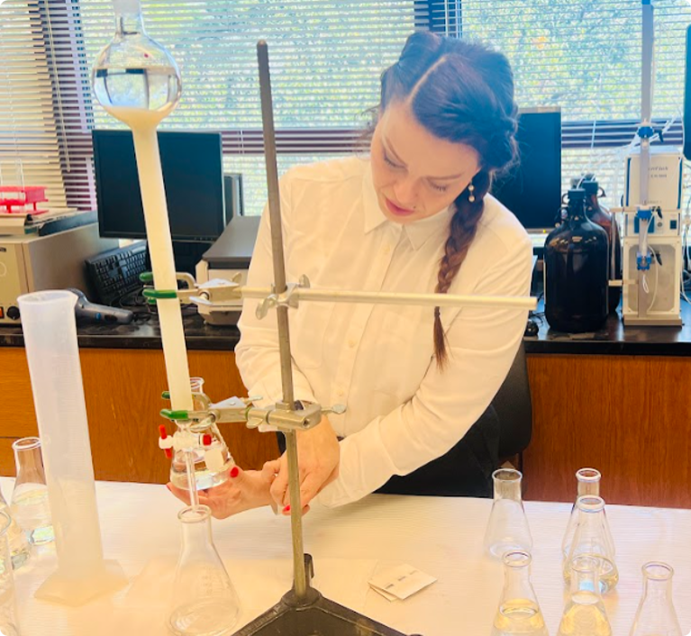

Rice RBLP
Smart assistant for pre- and post-award support at Rice Biotech LaunchPad.
I work at the intersection of medicinal plants, natural products, computational evaluation of bioactive compounds, and AI-enabled research tools.



Medicinal plants, natural products, computational screening, docking-based evaluation, and early scientific assessment of bioactive compounds.
Research integrity support, AI-enabled workflow tools, grants/compliance-adjacent operations, and structured research decision support.
Prototype tools and workflow systems built across natural products, clinical/research support, and scientific information management.
Smart assistant for pre- and post-award support at Rice Biotech LaunchPad.

The spectral intelligence concept for natural product discovery and GC-MS-centered workflows.
Clinical intelligence for integrity and quality in research-support and decision workflows.
Morgan research integrity support engine aligned with research security and compliance operations.

I welcome conversations about post-PhD roles, project-based collaborations, translational science opportunities, and research-support/program operations work.